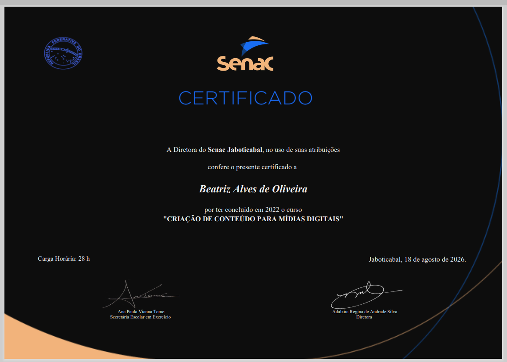
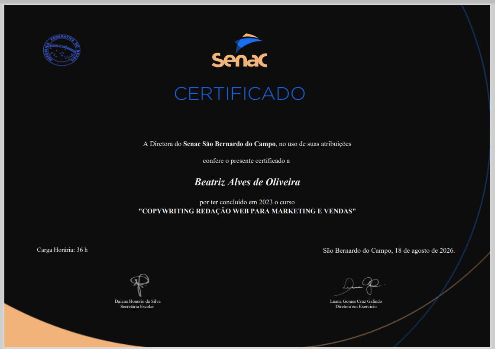
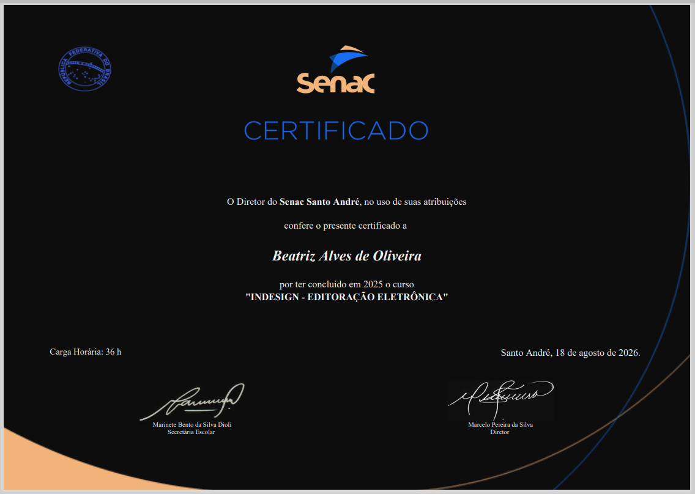
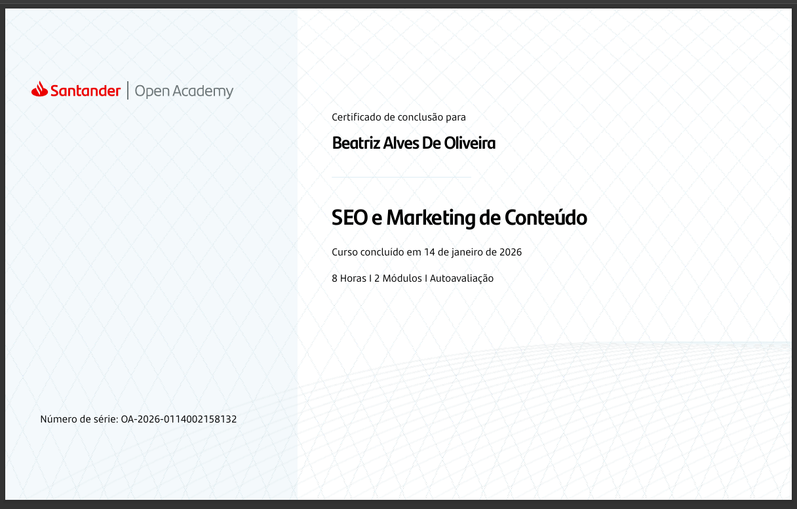
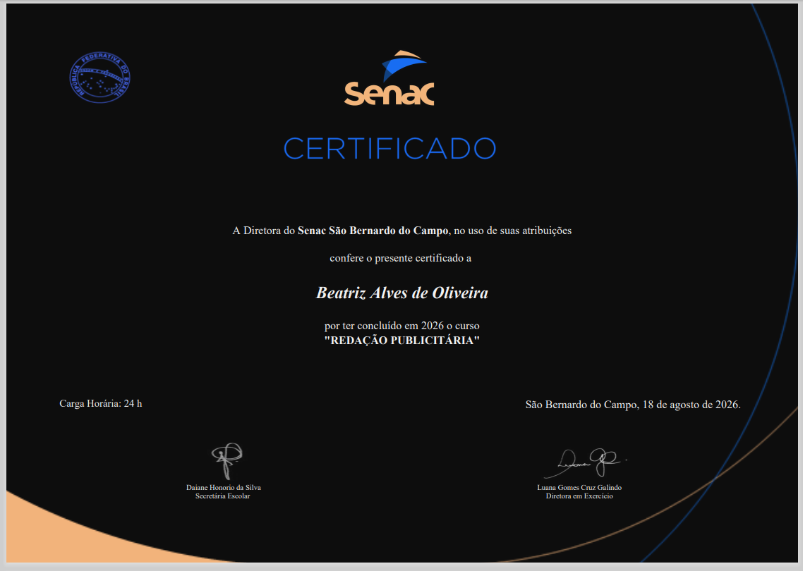
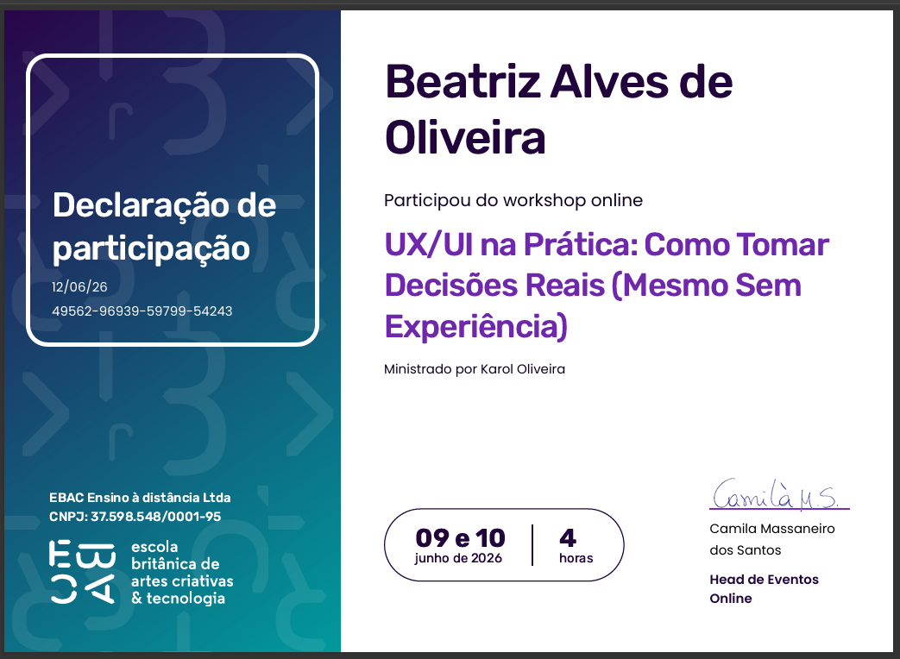

Formação
Certificações e Estudos.
Cursos, formações e certificações que sustentam minha atuação em jornalismo, comunicação e design.
Cursando atualmente
Jornalismo — graduação em andamento.
Estácio de Sá · 2025–2028
Certificados





